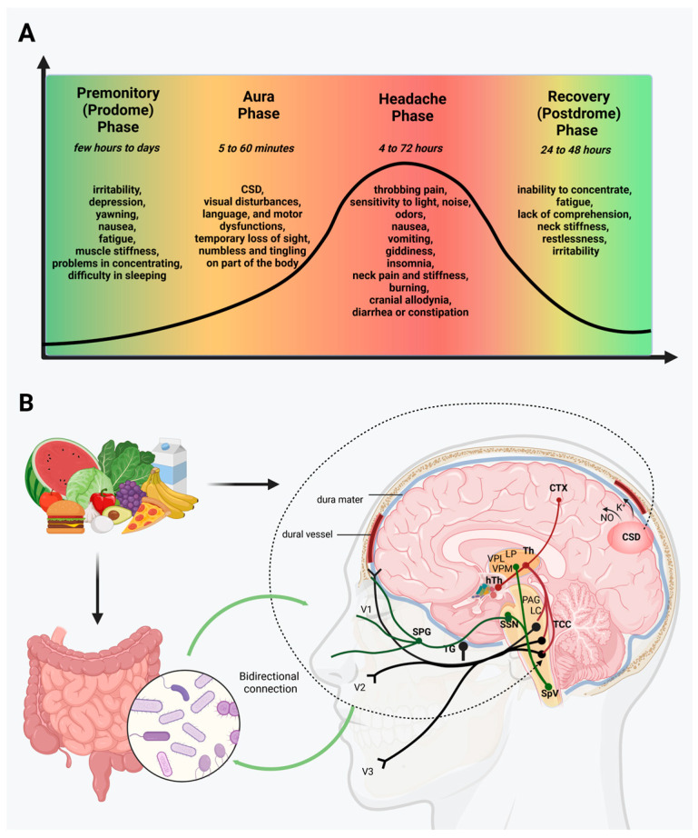

Q1. Irritabilidade e bocejo 36 h antes da dor. Isso é:
Meta + checklist
Pródromo, dor e pós-dromo
Ao final: pródromo ≠ aura; dor 4–72 h incapacitante; associados; pós-dromo.
Pródromo 24–48 h
Fase prodrômica em cerca de 60–75% (algumas refs 75–77%): sintomas premonitórios — irritabilidade, dificuldade de concentração, bocejo excessivo. Ocorre 24–48 horas antes da crise.
Pródromo ≠ aura: pródromo em 24–48 h; aura clássica em minutos a ~1 h antes. Confundir os dois é armadilha de prova.
Dor 4–72 h incapacitante
Dor unilateral, moderada a forte (muitas vezes forte), latejante/pulsátil. É incapacitante: na crise forte não se estuda, não se assiste exposição, não se corre — a pessoa precisa ficar quieta. Piora com o movimento, inclusive da cabeça. Duração da crise álgica: 4 a 72 horas.
O mantra é “florida, incapacitante, 4 a 72 horas”. A etimologia de migrânea — “metade do cérebro” — combina com a dor unilateral.
Associados
Quadro florido: náusea e vômito clássicos. Base: gastroparesia (esvaziamento gástrico dificultado). Podem ocorrer fotofobia, fonofobia e osmofobia.
Pós-dromo
Após a crise, fase de exaustão/esgotamento — horas, no máximo cerca de um dia.

Spekker E, Nagy-Grócz G. Neurol Int. 2023;15(3):1174–1190 — CC BY 4.0 · DOI 10.3390/neurolint15030073 · fonte
Quatro fases, uma linha do tempo
O painel mostra a travessia em 4 fases: pródromo (bocejo, irritabilidade), aura (quando há), dor 4–72 h e pós-dromo. Reconhecer a fase evita confundir pródromo com aura.
Quiz
Q2. Qual conjunto melhor fecha a crise álgica migranosa típica?